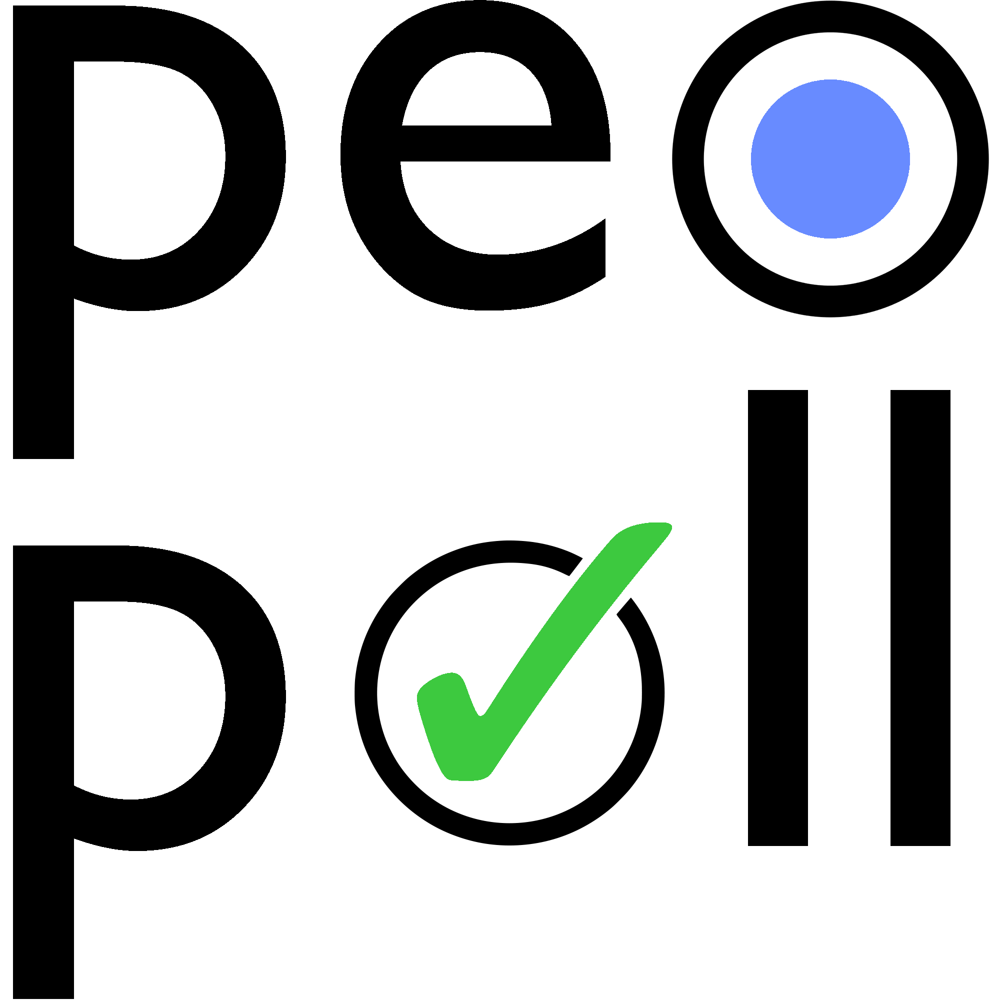

<mat-toolbar color="warm">
        
        <span class="menu-spacer"></span>
        <span>
            <a mat-button *ngIf="loginService.loggedIn()" [routerLink]="['/dashboard']" routerLinkActive="active">Dashboard</a>
            <a mat-button *ngIf="loginService.loggedIn()" [routerLink]="['/newpoll']" routerLinkActive="active">New Poll</a>
            <a mat-button *ngIf="loginService.loggedIn()" [routerLink]="['/friendslist']" routerLinkActive="active">Friends List</a>
        </span>
        <span class="alignRight"></span>
        <span>
            <a mat-button *ngIf="!loginService.loggedIn()" [routerLink]="['/register']" routerLinkActive="active">Register</a>
            <a mat-button *ngIf="!loginService.loggedIn()" [routerLink]="['/login']" routerLinkActive="active">Login</a>
            <a mat-button *ngIf="loginService.loggedIn()">{{ username }}</a>
            <a mat-button *ngIf="loginService.loggedIn()" (click)="onLogoutClick()">Log Out</a>
        </span>

  </mat-toolbar>